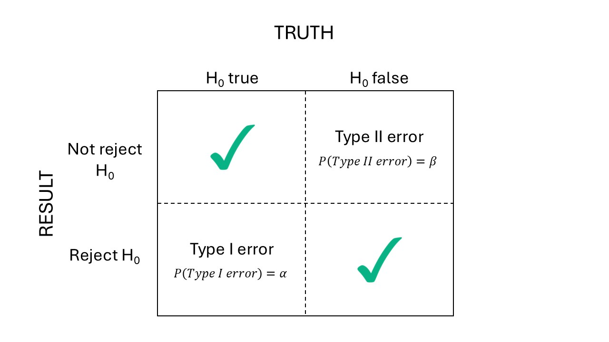

Day 17 Power and precision analyses
17.1 Announcements
- Find today’s recording in your K-State email inbox.
- HW2 grades are posted – you can resubmit once for full points.
- Some anxillary videos can be found in the STAT 720 channel now.
17.2 What is statistical power?
- Aims to represent the ability of an experiment to make a “scientific discovery”, provided there really is one to make.
- …We need experiments with power \(\geq\) 80%.
- Typically used to define the number of repetitions needed to achieve enough power.
- Strongly influenced by the “hypothesis tests” mentality – blame Mr. Popper!
- Also strongly influenced by the p<0.05-chasing mentality – who’s to blame for this? Blame all of us!
- Often the “golden standard” when proposing an experiment.
- Can be replaced by a precision analysis, which is slightly less p-value based.

Figure 17.1: Error types in classic hypothesis testing.
We normally control \(\alpha\), the probability of doing an error of type I. TO describe our experiment’s ability to detect scientific discoveries, we consider power: the \(P(\text{reject } H_0 | H_0 \text{ false}) = 1- \beta\).
17.3 Review: t-test
- Used to evaluate differences between treatment effects or means.
- Example testing against zero: \(t^{\star} = \frac{\hat\theta - 0}{s.e.(\hat\theta)} = \frac{\hat\theta - 0}{s.d.(\hat\theta)/\sqrt{n}}\)
- Note the sensibility to sample size.
- Also, remember the \(s.e.(\hat\theta)\) may differ depending on the design:
- \(s.e.(\hat\theta)\) may depend on \(\sigma^2_\varepsilon\) only (e.g., CRD, RCBD, mean comparisons between treatment levels of the treatment at the split-plot level), \(s.e.(\hat\theta) = \sqrt{\frac{2 \sigma^2_{\varepsilon}}{r}}\).
- \(s.e.(\hat\theta)\) may depend on \(\sigma^2_\varepsilon\) and \(\sigma^2_{whole \ plot}\) (e.g., mean comparisons between treatment levels of the treatment at the whole-plot level), \(s.e.(\hat\theta) = \sqrt{\frac{2 (\sigma^2_{\varepsilon} + b \cdot \sigma^2_w)}{b \cdot r}}\)
17.4 Power calculations – Analytic approach
17.4.1 Sample size calculation
To detect a difference \(\delta\): \[r = \frac{2\hat{\sigma}^2}{\delta^2}[t_{\alpha/2, \nu} + t_{\beta, \nu}]^2,\] where:
- \(r\) is the sample size (i.e., number of reps),
- \(\hat\sigma^2\) is the estimate of \(\sigma^2\) based on \(\nu\) degrees of freedom,
- \(\alpha\) is the type I error rate,
- \(\beta\) is the type II error rate,
- And note that: \(Var(\delta)=2\sigma^2/r\), which leads to \(s.e.(\delta)=\sqrt{\frac{2\sigma^2}{r}}\).
- See page 455 in Milliken and Johnson.
17.4.2 Power evaluation
The sample size calculation can be used to evaluate the power by solving for \(t_{\beta, \nu}\) and then determining the power as \(1-\beta\). Then, the equation for \(t_{\beta, \nu}\) is
\[t_{\beta, \nu} = \sqrt{\frac{r \delta^2 }{2\sigma^2}} - t_{\alpha/2, \nu}\]
17.4.3 Applied case I (from last week)
This was a CRD with \(\sigma^2_\varepsilon = 204\).
Because this is a CRD, the model is
\[y_{ijk} = \mu_0 + T_i + D_j +(T\times D)_{ij} + \varepsilon_{ijk}, \\ \varepsilon_{ijk} \sim N(0, \sigma^2).\]
url <- "https://raw.githubusercontent.com/stat720/summer2026/refs/heads/main/data/blood_study_pigs.csv"
df <- read.csv(url) |> mutate(Trt = as.factor(Trt), Day = as.factor(Day))
m <- lm(Serum_haptoglobin_mg.dL ~ Trt*Day, data = df)
# this is all we need
(sigma2_m1 <- sigma(m)^2)## [1] 204.1743After-the-fact power analysis
We can assume:
## [1] -1.973231- \(\sigma^2_\varepsilon = 204\)
- \(\delta = 40\)
- \(t_{\alpha/2, \nu} = 1.97\) (see above)
- \(r = 16\)
Then,
\[t_{\beta, \nu} = \sqrt{\frac{r \delta^2 }{2\sigma^2}} - t_{\alpha/2, \nu} = \sqrt{\frac{16\cdot 1600 }{408}} - 1.97 = 6.27.\]
delta <- 40
n_reps <- 16
t_beta <- sqrt(n_reps*delta^2 / (2*sigma2_m1)) - 1.97
df <- m$df.residual
(beta <- pt(-t_beta, df))## [1] 6.921895e-09## [1] 1Our study had a very large power to detect differences of 40 mg/dL.
17.4.4 Applied case II
Because this is an RCBD, the model is
\[y_{ij} = \mu_0 + T_i + b_j + \varepsilon_{ij}, \\ \varepsilon_{ij} \sim N(0, \sigma^2).\]
Let’s assume random blocks: \(b_j \sim N(0, \sigma^2_b)\).
url <- "https://raw.githubusercontent.com/stat720/summer2026/refs/heads/main/data/cochrancox_kfert.csv"
df2 <- read.csv(url) |>
transmute(K2O_lbac = as.factor(K2O_lbac), rep = as.factor(rep), yield)
m_random <- lmer(yield ~ K2O_lbac + (1|rep), data = df2)After-the-fact power analysis
Remember that all we need is the \(\sigma^2_\varepsilon\), because the block variance is not part of the mean comparisons.
We can assume:
## [1] 0.043685# get t_{alpha/2}
alpha <- .05
df <- (n_distinct(df2$K2O_lbac) - 1) * (n_distinct(df2$rep) - 1)
qt(alpha/2, df)## [1] -2.306004- \(\sigma^2_\varepsilon = 0.044\)
- Try \(\delta = 0.50\) and \(\delta = 0.25\)
- \(t_{\alpha/2, \nu} = 2.31\) (see above)
- \(r = 3\)
Then,
\[t_{\beta, \nu} = \sqrt{\frac{r \delta^2 }{2\sigma^2}} - t_{\alpha/2, \nu} = \sqrt{\frac{3 \cdot \delta^2 }{0.044}} - 2.31 = 2.27.\]
Power for \(\delta = 0.50\)
## [1] 0.05323888## [1] 0.9467611Power for \(\delta = 0.25\)
## [1] 0.5939471## [1] 0.4060529Our study did not had enough statistical power to detect differences of 0.5, but not 0.25.
17.4.5 Applied case III
Because this is a split-plot design, the model is
\[y_{ij} = \mu_0 + F_i + G_j + (F\times G)_{ij} + b_k + wp_{i(k)} + \varepsilon_{ij}, \\ wp_{i(k)}, \sim N(0, \sigma_{wp}^2) \\ \varepsilon_{ij} \sim N(0, \sigma^2_\varepsilon).\]
- Like before, we can choose either fixed or random for \(b_k\).
- But now, the se(mean) depend on the level we are looking.
For differences at the whole-plot level (fung) we had: \(se(\hat\mu-\mu') = \sqrt{\frac{2(\sigma^2_\varepsilon + g \ \sigma^2_{wp})}{b \cdot g}}\). For differences at the split-plot level (gen) we had: \(se(\hat\mu-\mu') = \sqrt{\frac{2(\sigma^2_\varepsilon)}{b \cdot f}}\).
df3 <- durban.splitplot
m3 <- lmer(yield ~ fung*gen + (1|block/fung), data = df3)
# degrees of freedom (from class)
m3_df <- c(3, 414, 414)
names(m3_df) <- c("fung", "gen", "fung:gen")After-the-fact power analysis at the split-plot level
Remember that all we need is the \(\sigma^2_\varepsilon\), because the block variance and whole-plot variance are not part of the mean comparisons at this level.
Remember that \(Var(\hat\mu-\mu') = \frac{2(\sigma^2_\varepsilon)}{b \cdot f}\) and \(se(\hat\mu-\mu') = \sqrt{\frac{2(\sigma^2_\varepsilon)}{b \cdot f}}\). We can assume:
## [1] -1.965711- \(\sigma^2_\varepsilon = 0.08\)
- \(\delta = 0.40\)
- \(t_{\alpha/2, \nu} = 1.96\) (see above)
- \(r = blocks \cdot fung = 4 \cdot 2\)
Then,
\[t_{\beta, \nu} = \sqrt{\frac{r \delta^2 }{2\sigma^2}} - t_{\alpha/2, \nu} = \sqrt{\frac{8 \cdot \delta^2 }{0.16}} - 1.96 = 2.27.\]
Power for \(\delta = 0.40\)
diff <- .4
n_fung <- 2
n_reps <- 4
t_beta <- sqrt((n_reps*n_fung)*(diff^2) / (2*sigma2_m3)) - 1.96
(beta <- pt(-t_beta, df_e))## [1] 0.1883088## [1] 0.8116912After-the-fact power analysis at the whole-plot level
Now we need the \(\sigma^2_\varepsilon\) AND \(\sigma^2_{wp}\), because the block variance variance is not part of the mean comparisons at this level, but the whole-plot variance is!
Remember that \(Var(\hat\mu-\mu') = \frac{2(\sigma^2_\varepsilon + g \ \sigma^2_{wp})}{b \cdot g}\) and \(se(\hat\mu-\mu') = \sqrt{\frac{2(\sigma^2_\varepsilon + g \ \sigma^2_{wp})}{b \cdot g}}\).
We can assume:
sigma2_m3 <- sigma(m3)^2
sigma2wp_m3 <- VarCorr(m3)$`fung:block`[1]
# get t_{alpha/2}
alpha <- .05
df_e <- m3_df["fung"]
t_alpha <- qt(1-alpha/2, df_e)- \(\sigma^2_\varepsilon = 0.08\)
- \(\sigma^2_{wp} = 0.014\)
- \(\delta = 0.40\)
- \(t_{\alpha/2, \nu} = 3.18\) (see above)
- \(r = blocks \cdot gen = 4 \cdot 70\)
Then,
\[t_{\beta, \nu} = \sqrt{\frac{r \delta^2 }{2(\sigma^2_\varepsilon + g \ \sigma^2_{wp}) }} - t_{\alpha/2, \nu} = \sqrt{\frac{280 \cdot \delta^2 }{2.09}} - 3.18 = 1.45.\]
Power for \(\delta = 0.40\)
diff <- .4
n_gen <- 70
n_reps <- 4
t_beta <- sqrt((n_reps*n_gen)*(diff^2) / (2*(sigma2_m3 + n_gen*sigma2wp_m3))) - t_alpha
df_e <- m3_df["fung"]
(beta <- pt(-t_beta, df_e))## [1] 0.121355## [1] 0.87864517.5 Precision analysis as an alternative to power analysis
Advantages:
- Relies less on the p-value<0.05 paradigm.
- Does not depend on a pre-determined difference.
- Otherwise, power is directly dependent on the effect size and we might be overconfident about our design.
For example: for Model 1 (CRD)
sigma2_m1 <- sigma(m)
t_alpha_m1 <- qt(1 - alpha/2, m$df.residual)
#get se
sqrt(2*sigma2_m1/16) * t_alpha_m1## [1] 2.63714